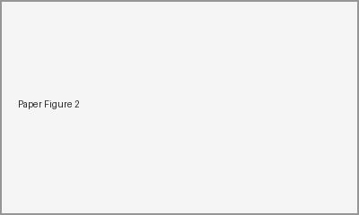
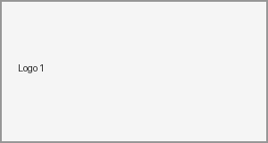
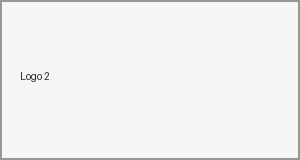
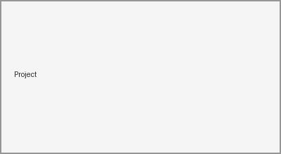

Biography
Hi! I am Your Name, currently an incoming PhD student working on
Generative AI, Multi-modal Models, and AI Security.
My research interests mainly focus on image generation, fake image detection,
multimodal reasoning, and trustworthy AI.
Feel free to contact me by email if you are interested in discussion or collaboration.
Full List
Paper Title: Toward Robust and Explainable AI-Generated Image Detection
Your Name, Coauthor A, Coauthor B
Conference / Journal, 2026
We propose a robust framework for detecting AI-generated images with
multimodal evidence and interpretable visual cues.

Paper Title: Multimodal Representation Learning for AI Security
Your Name, Coauthor A, Coauthor B
Conference / Journal, 2025
This work studies semantic-aware visual encoders for improving
generalization in AI security scenarios.
* Equal contribution. † Corresponding author.
Research & Visiting Experience

Lab / University Name
Research Assistant, 2024 - Present
Supervised by Prof. XXX.

Research Group / Institute
Visiting Student / Intern, 2023 - 2024
Worked on generative image detection and multimodal learning.
Engineering Experience

Project Name
AI-generated Image Detection System
Built a training and evaluation pipeline for fake image detection,
including data processing, model training, and deployment.
Education
Your University
B.Eng. / M.Sc. in Computer Science
Sep. 2022 - Jun. 2026